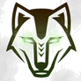

Karte antippen: Ablauf als Swimlane, Zuständige & Fristen · 🤖 = über den Bot digitalisiert
Führung
Kern · Raiden
Support

Wild ThingsKarte antippen: Ablauf als Swimlane, Zuständige & Fristen · 🤖 = über den Bot digitalisiert